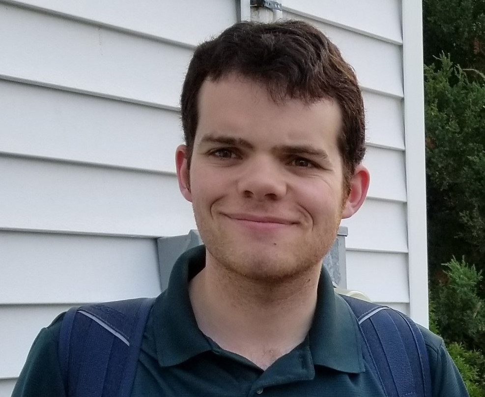

I am a postdoctoral researcher in the Department of Mathematics at Stockholm University, working with Peter LeFanu Lumsdaine. I completed my PhD at the University of Western Ontario, under the supervision of
Chris Kapulkin.
My main areas of research are in categorical homotopy theory and higher category theory, with a focus on model categories. In particular, I am interested in modelling higher categories using cubical sets, and in comparing simplicial and cubical models of higher categories. I am also interested in the theory of path homology of directed graphs.
Publications and preprints
► (w/ D. Carranza, K. Kapulkin, M. Opie, M. Sarazola, and L. Z. Wong) Cofibration category of digraphs for path homology. Submitted, 2022.
[arXiv]
► Cubical models of higher categories without connectionsJ. Pure Appl. Algebra (to appear), 2022.
[arXiv]
► Cubical Models of Higher Categories. PhD thesis, 2021.
[UWO]
► (w/ K. Kapulkin and Y. Maehara) Equivalence of cubical and simplicial approaches to (∞,n)-categories.Adv. Math. (to appear), 2021.
[arXiv]
► (w/ K. Kapulkin, Z. Lindsey, and C. Sattler) Cubical models of (∞,1)-categories.Mem. Amer. Math. Soc. (to appear), 2020.
[arXiv]
► (w/ C. Ingalls and E. Faber) Computing global dimension of endomorphism rings via ladders.J. Algebra, 458:307-350, 2016.
[arXiv]
Cubical models of higher categories without connections.Higher Categories and Categorification, part two, Mathematical Sciences Research Institute / National Autonomous University of Mexico, Cuernavaca.
December 8, 2021
Cubical models of higher categories. Stockholm-Göteborg joint type theory seminar, Stockholm University.
September 27 - October 4, 2021
Cubical models of higher categories. University of New Brunswick, Fredericton.